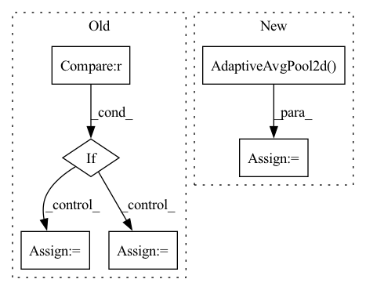

Pattern ID :7898

Before Change
self.scale = scale
self.inplanes = 64
blocks = [1, 2, 4]
if output_stride == 16:
strides = [1, 2, 2, 1]
dilations = [1, 1, 1, 2]
elif output_stride == 8:
strides = [1, 2, 1, 1]
dilations = [1, 1, 2, 4]
else:
raise NotImplementedError
After Change
self.layer2 = self._make_layer(block, 128, layers[1], stride=2)
self.layer3 = self._make_layer(block, 256, layers[2], stride=2)
self.layer4 = self._make_layer(block, 512, layers[3], stride=2)
self.avgpool = nn.AdaptiveAvgPool2d(1)
self.fc = nn.Linear(512 * block.expansion, num_classes)
for m in self.modules():
if isinstance(m, nn.Conv2d):
In pattern: SUPERPATTERN
Frequency: 3
Non-data size: 6
Instances
Fragment ID: 28091332
Project Name: jittor/jittor
Commit Name: c7b78f570e490793fee8e15b3bfcbec08683cdfe
Time: 2021-04-03
Author: randonlang@gmail.com
File Name: python/jittor/models/res2net.py
M Class Name: Res2Net
N Class Name: Res2Net
M Method Name: __init__(6)
N Method Name: __init__(6)
M Parent Class: nn.Module
N Parent Class: Module
M File Name: python/jittor/models/res2net.py
N File Name: python/jittor/models/res2net.py
M Start Line: 87
M End Line: 111
N Start Line: 99
N End Line: 123
'>
Before Change
shuffle=True, num_workers=args.workers, drop_last=True)
val_dataset = dataset(root=args.root, task=args.target, download=True, transform=val_transform)
val_loader = DataLoader(val_dataset, batch_size=args.batch_size, shuffle=False, num_workers=args.workers)
if args.data == "DomainNet":
test_dataset = dataset(root=args.root, task=args.target, split="test", download=True, transform=val_transform)
test_loader = DataLoader(test_dataset, batch_size=args.batch_size, shuffle=False, num_workers=args.workers)
else:
test_loader = val_loader
train_source_iter = ForeverDataIterator(train_source_loader)
train_target_iter = ForeverDataIterator(train_target_loader)
After Change
print("=> using pre-trained model "{}"".format(args.arch))
backbone = utils.get_model(args.arch)
if args.add_pool:
pool_layer = nn.Sequential(
nn.AdaptiveAvgPool2d(output_size=(1, 1)),
nn.Flatten()
)
else:
'>
Fragment ID: 28091327
Project Name: thuml/transfer-learning-library
Commit Name: f7950ee17554dc6b3e19c13851106cda21041bca
Time: 2021-07-26
Author: 13126830206@163.com
File Name: examples/domain_adaptation/classification/mdd.py
M Class Name: AnonimousClass
N Class Name: AnonimousClass
M Method Name: main(1)
N Method Name: main(1)
M Parent Class:
N Parent Class:
M File Name: examples/domain_adaptation/classification/mdd.py
N File Name: examples/domain_adaptation/classification/mdd.py
M Start Line: 74
M End Line: 150
N Start Line: 67
N End Line: 150
'>
Before Change
shuffle=True, num_workers=args.workers, drop_last=True)
val_dataset = dataset(root=args.root, task=args.target, download=True, transform=val_transform)
val_loader = DataLoader(val_dataset, batch_size=args.batch_size, shuffle=False, num_workers=args.workers)
if args.data == "DomainNet":
test_dataset = dataset(root=args.root, task=args.target, split="test", download=True, transform=val_transform)
test_loader = DataLoader(test_dataset, batch_size=args.batch_size, shuffle=False, num_workers=args.workers)
else:
test_loader = val_loader
train_source_iter = ForeverDataIterator(train_source_loader)
train_target_iter = ForeverDataIterator(train_target_loader)
After Change
print("=> using pre-trained model "{}"".format(args.arch))
backbone = utils.get_model(args.arch)
if args.add_pool:
pool_layer = nn.Sequential(
nn.AdaptiveAvgPool2d(output_size=(1, 1)),
nn.Flatten()
)
else:
'>
Fragment ID: 28091335
Project Name: thuml/transfer-learning-library
Commit Name: f7950ee17554dc6b3e19c13851106cda21041bca
Time: 2021-07-26
Author: 13126830206@163.com
File Name: examples/domain_adaptation/classification/dann.py
M Class Name: AnonimousClass
N Class Name: AnonimousClass
M Method Name: main(1)
N Method Name: main(1)
M Parent Class:
N Parent Class:
M File Name: examples/domain_adaptation/classification/dann.py
N File Name: examples/domain_adaptation/classification/dann.py
M Start Line: 74
M End Line: 151
N Start Line: 68
N End Line: 153